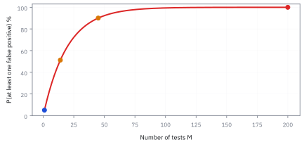
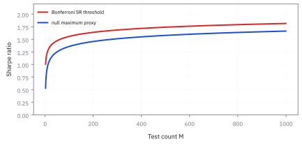

3.6 The Multiple Testing Problem
เมื่อลองหลายแบบแล้วเลือกตัวที่ดีที่สุด ผู้ชนะจะดูดีแม้ไม่มีตัวไหนมี edge เลย หลักฐานจึงต้องคิดรวมทุกแบบที่เคยลอง
ทีมวิจัยอยากหากลยุทธ์เทรดที่ทำกำไรได้จริง กลยุทธ์ในที่นี้คือกฎที่บอกว่าจะซื้อหรือขายเมื่อไร ทีมเขียนกฎออกมา 200 แบบ แล้วลองแต่ละแบบกับราคาย้อนหลังห้าปี การลองกับข้อมูลย้อนหลังแบบนี้เรียกว่า backtest
ทีมตรวจทีละกลยุทธ์ด้วยการทดสอบจากหน้า การทดสอบสมมติฐาน การทดสอบนี้ถามว่า “ถ้ากลยุทธ์นี้ไม่มี edge เลย ผลดีขนาดที่เห็นจะเกิดจากโชคบ่อยแค่ไหน” (edge คือความได้เปรียบจริง ทำให้ผลตอบแทนเฉลี่ยระยะยาวสูงกว่าศูนย์) ถ้าโชคทำได้ไม่เกิน 5% ของครั้ง กลยุทธ์นั้นถือว่า “ผ่าน”
ทีมส่งมาให้ดูเฉพาะตัวที่ผ่าน ตัวที่ดีที่สุดมี Sharpe รายปีราว 1.2 (Sharpe คือผลตอบแทนเฉลี่ยที่ได้เกินเงินฝาก หารด้วยความผันผวน ยิ่งสูงยิ่งดี)
ลองสมมติว่าความจริงไม่มีกลยุทธ์ไหนใน 200 ตัวมี edge เลย จะมีกี่ตัวที่ผ่าน และ Sharpe 1.2 ของตัวที่ดีที่สุดน่าตื่นเต้นแค่ไหน
ลองตอบก่อนเปิดเฉลย
แต่ละตัวผ่านเพราะโชคได้ 5% ของครั้ง จาก 200 ตัวจึงคาดว่าผ่านราว $200\times0.05=10$ ตัว ทั้งที่ไม่มีตัวไหนดีจริง
ถ้าการทดสอบแต่ละตัวไม่เกี่ยวกัน (อิสระกัน) โอกาสที่ไม่มีตัวไหนผ่านเลยคือ $0.95^{200}$ ซึ่งเล็กมาก โอกาสที่มีอย่างน้อยหนึ่งตัวผ่านจึงเกือบแน่นอน:
ส่วน Sharpe ของตัวที่ดีที่สุดใน 200 ตัวที่ไม่มี edge จะออกมาเฉลี่ยราว 1.23 (ขั้นที่ 3 จะคำนวณให้ดู) ใกล้กับ 1.2 ที่เห็นพอดี ผู้ชนะ Sharpe 1.2 จึงเป็นสิ่งที่โชคล้วน ๆ ผลิตได้ตามปกติ ถ้าจะเชื่อ ต้องใช้เกณฑ์ที่เข้มกว่ามาก เช่นเกณฑ์ Bonferroni ซึ่งต้องการ Sharpe ราว 1.64 (ขั้นที่ 5 จะคำนวณให้ดู)
ภาพรวมก่อนลงสูตร
ในหน้า การทดสอบสมมติฐาน เราตั้งเกณฑ์ 5% ไว้ ความหมายคือ ถ้ากลยุทธ์ไม่มี edge จริง การทดสอบจะหลงประกาศว่า “ผ่าน” ได้ 5% ของครั้ง แต่ตัวเลข 5% นี้คุมแค่ การทดสอบหนึ่งครั้ง พอทดสอบ 200 ครั้ง ตัวที่ผ่านเพราะโชคก็สะสมขึ้นเป็นราว $200\times0.05=10$ ตัว ทั้งที่ไม่มีอะไรจริงเลย
ผู้ชนะที่ถูกคัดมาจากการลองหลายครั้งจึงเป็นหลักฐานที่อ่อนกว่าการทดสอบครั้งเดียวที่ตั้งใจไว้ก่อน เรื่องนี้เรียกว่า multiple testing problem (ปัญหาการทดสอบหลายครั้ง) มันเกิดทุกที่ที่มีการค้นหา เช่น เลือก lookback ที่ดีที่สุด (lookback คือจำนวนวันย้อนหลังที่กฎใช้ดูราคา) เลือกหุ้นที่ดีที่สุด หรือเลือกผู้จัดการกองทุนที่ดีที่สุด
ทางแก้มีสามระดับ:
- นับให้ครบว่าลองไปกี่แบบ รวมแบบที่ลองแล้วทิ้งด้วย
- ทำเกณฑ์ให้เข้มขึ้นตามจำนวนที่ลอง มีสองวิธีตามเป้าหมาย Bonferroni คุมโอกาสที่จะมีของปลอมแม้แต่ตัวเดียว ส่วน Benjamini–Hochberg คุมสัดส่วนของปลอมในรายชื่อที่ผ่าน
- จัดขั้นตอนวิจัยให้มีข้อมูลชุดหนึ่งที่ไม่เคยถูกใช้ตัดสินใจ เก็บไว้ตรวจตอนท้าย
หน้านี้เริ่มจากกลโกงที่ไม่ต้องรู้อะไรเลยก็สร้างประวัติสวย ๆ ได้ จากนั้นนับว่าจะมีผู้ผ่านปลอมกี่ตัว หาว่าผู้ชนะที่เกิดจาก noise ดูดีได้แค่ไหน (noise คือการขึ้นลงแบบสุ่มที่ไม่มีความหมาย) ดูว่ากลยุทธ์ที่คล้ายกันเปลี่ยนผลอย่างไร แล้วจบที่ Bonferroni, Benjamini–Hochberg, base rate และขั้นตอนวิจัยที่ใช้จริง
รูป — p-value ของ 200 กลยุทธ์ที่ไม่มี edge เลย
ศัพท์ที่ใช้ในหน้านี้
- Edge
- ความได้เปรียบจริงของกลยุทธ์ ทำให้ผลตอบแทนเฉลี่ยระยะยาวสูงกว่าศูนย์ กลยุทธ์ที่ “ไม่มี edge” ได้กำไรหรือขาดทุนเพราะโชคอย่างเดียว
- Backtest
- การลองกฎเทรดกับราคาย้อนหลัง เพื่อดูว่าถ้าใช้กฎนี้ในอดีตจะได้ผลอย่างไร
- Sharpe ratio
- ผลตอบแทนเฉลี่ยที่ได้เกินเงินฝาก หารด้วยความผันผวนของมัน ยิ่งสูงยิ่งดี หน้านี้ใช้ Sharpe รายปีเสมอ
- p-value และเกณฑ์ $\alpha$
- p-value คือโอกาสที่โชคล้วน ๆ ให้ผลดีอย่างน้อยเท่าที่เห็น ถ้า p ไม่เกินเกณฑ์ $\alpha$ (เช่น 5%) กลยุทธ์ถือว่าผ่าน
- Noise
- การขึ้นลงแบบสุ่มของข้อมูลที่ไม่มีความหมาย และไม่ซ้ำเดิมในอนาคต
- Family ของการทดสอบ
- ชุดของทุกการทดสอบในการค้นหาครั้งหนึ่ง รวมแบบที่ลองแล้วทิ้ง ต้องนับให้ครบก่อนจึงรู้ว่าลองไปกี่แบบ
- False positive
- ของปลอม คือการประกาศว่ามี edge ทั้งที่ไม่มี หน้านี้นับจำนวนของปลอมเป็น $V$
- FWER
- family-wise error rate คือโอกาสที่มีของปลอมอย่างน้อยหนึ่งตัวในทั้ง family ใช้เมื่อของปลอมแม้แต่ตัวเดียวก็ทำให้เสียเงินมาก
- FDR
- false discovery rate คือค่าเฉลี่ยของสัดส่วนของปลอมในรายชื่อที่ผ่าน ใช้เมื่อคัดผู้สมัครหลายตัวไปตรวจต่อ และรับของปลอมได้บ้าง
- Bonferroni
- เอาเกณฑ์ $\alpha$ หารด้วยจำนวนการทดสอบ $M$ แล้วใช้เป็นเกณฑ์ของแต่ละตัว คุม FWER ได้โดยไม่ต้องสมมติว่าการทดสอบอิสระกัน
- Benjamini–Hochberg (BH)
- เรียง p-value จากน้อยไปมาก แล้วเทียบกับเส้นเกณฑ์ที่ชันขึ้นตามอันดับ คุม FDR ได้เมื่อความสัมพันธ์ระหว่างการทดสอบเป็นแบบที่ทฤษฎีรองรับ
- Power
- โอกาสที่การทดสอบจับ edge ได้เมื่อ edge มีจริง
- Base rate
- สัดส่วนของไอเดียที่ดีจริงในกองไอเดียตั้งต้น ก่อนทดสอบใด ๆ
- Survivorship bias
- ความเอียงที่เกิดเพราะเห็นแต่ผู้รอด เช่นฐานข้อมูลที่เก็บแต่กองทุนที่ยังไม่ปิด
- Data snooping และ data leakage
- snooping คือการใช้ข้อมูลชุดเดิมเลือกซ้ำ ๆ จนสิ่งที่เลือกได้เข้ากับ noise พอดี leakage คือการที่ข้อมูลจากอนาคตรั่วเข้าไปใน backtest ทั้งที่ ณ วันนั้นยังไม่มีใครรู้ ทั้งคู่ทำให้ผลดูดีเกินจริง
- Holdout และ walk-forward
- holdout คือข้อมูลชุดที่เก็บไว้ตรวจครั้งสุดท้ายครั้งเดียว walk-forward คือการสร้างกลยุทธ์ด้วยข้อมูลถึงวันหนึ่ง ทดสอบกับช่วงถัดไป แล้วเลื่อนไปเรื่อย ๆ
สัญลักษณ์และหน่วย
| สัญลักษณ์ | ความหมาย | หน่วย |
|---|---|---|
| $M,\ M_0$ | จำนวนการทดสอบทั้งหมด และจำนวนตัวที่ไม่มี edge จริง ($H_0$ จริง) | ตัว |
| $\alpha$ | เกณฑ์ต่อการทดสอบ หรืองบ FWER ของทั้ง family | ไม่มีหน่วย |
| $V,\ R$ | จำนวนของปลอม (false positive) และจำนวนที่ประกาศว่าผ่านทั้งหมด | ตัว |
| $Z_i,\ Z_{\max}$ | สถิติทดสอบของกลยุทธ์ที่ $i$ และของผู้ชนะ $Z_i=\widehat{\mathrm{SR}}_i\sqrt T$ | จำนวน SE |
| $\widehat{\mathrm{SR}}$ | Sharpe รายปีที่คำนวณจากข้อมูล | ต่อรากที่สองของปี |
| $T$ | ความยาวข้อมูล | ปี |
| $\Phi,\ \phi$ | โอกาสสะสม และ density ของ normal มาตรฐาน | ไม่มีหน่วย |
| $\rho$ | correlation ระหว่างสถิติของสองกลยุทธ์ใด ๆ | ไม่มีหน่วย |
| $q$ | งบ FDR ของ BH (ในหน้านี้ไม่ใช่จำนวนงวดต่อปี) | ไม่มีหน่วย |
ขั้นที่ 1 — ประวัติสมบูรณ์แบบผลิตได้โดยไม่ต้องรู้อะไรเลย
ก่อนลงสูตร ลองดูกลโกงเก่าแก่อันหนึ่ง มันแสดงว่าการคัดเลือกอย่างเดียวก็สร้าง “ประวัติสมบูรณ์แบบ” ได้ โดยไม่ต้องรู้อะไรเลย
โจทย์ให้อะไรมาบ้าง: ทุกวันพุธ คุณได้จดหมายจากคนแปลกหน้า จดหมายทายว่าฟุตบอลนัดใหญ่วันอาทิตย์ทีมไหนจะชนะ มันทายถูกสิบสัปดาห์ติดกัน สัปดาห์ที่สิบเอ็ด จดหมายขอเงิน \$10,000 แลกกับคำทายนัดถัดไป คุณควรจ่ายไหม
สิ่งที่ผู้ส่งทำจริง (ตัวเลขสมมติ):
- สัปดาห์แรกส่งจดหมายถึง 10,240 คน ครึ่งหนึ่งทายว่าทีม A ชนะ อีกครึ่งทายว่าทีม B ชนะ
- สัปดาห์ถัดไปส่งต่อเฉพาะคนที่ได้คำทายถูก แล้วแบ่งครึ่งทายสองทางอีก ทำแบบนี้ทุกสัปดาห์
- ค่าส่งจดหมายฉบับละ \$0.75
ทุกสัปดาห์ คนที่ยังเห็นแต่คำทายถูกเหลือครึ่งเดียว ให้ $k=0,1,\ldots,9$ เป็นลำดับสัปดาห์ สัปดาห์ $k$ จึงส่งจดหมาย $10{,}240/2^k$ ฉบับ เราอยากรู้สองอย่าง หลังแบ่งครึ่งสิบครั้งเหลือกี่คน และส่งจดหมายไปทั้งหมดกี่ฉบับ
คำตอบ: หลังสิบสัปดาห์ เหลือผู้รับ 10 คนที่เห็นคำทายถูกสิบครั้งติด ทั้งที่ผู้ส่งไม่รู้ผลล่วงหน้าเลย จำนวนจดหมายทั้งหมดเป็นอนุกรมเรขาคณิต แต่ละสัปดาห์ส่งน้อยลงครึ่งหนึ่ง จึงรวมด้วยสูตร $1+r+\cdots+r^{n-1}=\tfrac{1-r^{n}}{1-r}$ โดย $r=\tfrac12$ คืออัตราส่วน และ $n=10$ คือจำนวนสัปดาห์ ได้ 20,460 ฉบับ
ต้นทุนค่าส่งคือ $20{,}460\times\$0.75=\$15{,}345$ ถ้าทั้งสิบคนจ่าย รายรับคือ $10\times\$10{,}000=\$100{,}000$ กลโกงนี้จึงคุ้มมาก
ถ้าคุณเป็นหนึ่งในสิบคนนั้น คุณคือผู้รอดของการคัดเลือก ประวัติที่คุณเห็นถูกต้องทุกบรรทัด สิ่งที่หายไปคือจดหมายอีก $20{,}460-10=20{,}450$ ฉบับที่ส่งไปหาคนอื่นและคุณไม่เคยเห็น ทุกสัปดาห์จดหมายครึ่งหนึ่งทายผิด ในนั้นจึงมีจดหมายทายผิด $20{,}460/2=10{,}230$ ฉบับ คำตอบคือไม่ควรจ่าย เพราะประวัติสิบครั้งนี้ผลิตได้จากการคัดเลือกล้วน ๆ
เรื่องแบบนี้เกิดได้โดยไม่ต้องมีคนโกง สมมติมีผู้จัดการกองทุน 10,240 คนที่ไม่มีฝีมือเลย แต่ละปีแต่ละคนชนะตลาดด้วยโอกาสครึ่งหนึ่ง เหมือนโยนเหรียญ คนที่แพ้ปีไหนถูกปิดกองทุนปีนั้น หลังสิบปีจะเหลือ $10{,}240\times(\tfrac12)^{10}=10$ คนที่ชนะรวดสิบปี ฐานข้อมูลที่เก็บแต่กองทุนที่ยังเปิดอยู่จะเห็นแต่สิบคนนี้ ความเอียงแบบนี้เรียกว่า survivorship bias (ความเอียงจากการเห็นแต่ผู้รอด)
รูป — จำนวนผู้รับจดหมายที่ยังเห็นคำทายถูกทุกครั้ง
ขั้นที่ 2 — นับผู้ผ่านปลอม: ค่าคาดหวังกับโอกาสมีอย่างน้อยหนึ่งตัว
กลโกงจดหมายใช้การคัดเลือกโดยตั้งใจ ทีมวิจัยทำสิ่งเดียวกันโดยไม่ตั้งใจ เมื่อลองหลายกลยุทธ์แล้วเก็บแต่ตัวที่ผ่าน ขั้นนี้นับสองอย่าง โดยเฉลี่ยจะมีผู้ผ่านปลอมกี่ตัว และมีโอกาสเท่าไรที่จะเจอผู้ผ่านปลอมอย่างน้อยหนึ่งตัว
ของที่รู้:
- จำนวนการทดสอบ (จำนวนกลยุทธ์ที่ลอง) $M=200$ ชุดการทดสอบทั้งหมดนี้เรียกว่า family
- สมมติว่าทุกตัวไม่มี edge แต่ละตัวจึงผ่านเพราะโชคด้วยโอกาส $\alpha=5\%$ นี่คือความหมายของเกณฑ์ 5%
- ตัวนับ $I_i$ ของกลยุทธ์ตัวที่ $i$: $I_i=1$ ถ้าผ่าน และ $I_i=0$ ถ้าไม่ผ่าน ค่าเฉลี่ยของมันคือ $\mathbb E[I_i]=1\times\alpha+0\times(1-\alpha)=\alpha$
- จำนวนผู้ผ่านปลอมทั้งหมดคือผลรวมของตัวนับ $V=I_1+I_2+\cdots+I_M$
สองตัวเลขแรกตอบคนละคำถาม $\mathbb E[V]=10$ บอกว่าโดยเฉลี่ยจะมีของปลอมกี่ตัว ส่วน $P(V\ge1)$ บอกว่ามีโอกาสแค่ไหนที่ของปลอมจะโผล่มาอย่างน้อยหนึ่งตัว ตัวหลังนี้มีชื่อว่า family-wise error rate (FWER)
ทั้งสองต้องการข้อสมมติต่างกันด้วย ค่าเฉลี่ยของผลรวมเท่ากับผลรวมของค่าเฉลี่ยเสมอ ไม่ว่าการทดสอบจะเกี่ยวกันแค่ไหน แต่ $P(V=0)=(1-\alpha)^M$ ได้มาจากการคูณโอกาส “ไม่ผ่าน” ของทุกตัวเข้าด้วยกัน การคูณแบบนี้ใช้ได้เฉพาะเมื่อการทดสอบอิสระกัน ลองนึกกรณีสุดขั้ว ถ้า 200 การทดสอบเป็นสำเนาเดียวกันหมด ทุกตัวจะผ่านพร้อมกันหรือไม่ผ่านพร้อมกัน FWER จึงเหลือแค่ 5% แต่ $\mathbb E[V]=0.05\times200+0.95\times0=10$ เหมือนเดิม คือ 95% ของครั้งไม่มีใครผ่าน และ 5% ของครั้งผ่านพร้อมกันทั้ง 200 ตัว
จุดที่คนสะดุดอยู่ตอนหาว่าต้องลองกี่แบบ $\ln0.95$ ติดลบ การหารด้วยจำนวนลบทำให้เครื่องหมายอสมการกลับทิศ จาก $\lt$ เป็น $\gt$ ผลคือ ลองแค่ 14 แบบ โอกาสเจอของปลอมก็เกินครึ่งแล้ว เพราะ $1-0.95^{14}\approx51.2\%$ ถ้าลอง 45 แบบ โอกาสเกิน 90% เพราะ $1-0.95^{45}\approx90.1\%$ ปัญหาจึงเริ่มตั้งแต่ grid เล็ก ๆ (grid คือชุดค่าพารามิเตอร์ที่ลองครบทุกค่า)
ตัวอย่างที่เห็นภาพชัดที่สุด ในหน้า การทดสอบสมมติฐาน ผู้จัดการกองทุนที่ชนะตลาดเก้าในสิบปีมี p-value $11/1{,}024\approx1.07\%$ ดูหายากมาก แต่ถ้าเขาคือคนที่ดีที่สุดจากผู้จัดการไร้ฝีมือ 20 คน โอกาสที่อย่างน้อยหนึ่งคนจะมีประวัติแบบนี้คือ $1-(1-0.0107)^{20}\approx19.4\%$ เกือบหนึ่งในห้า ไม่หายากเลย
รูป — โอกาสมีผู้ผ่านปลอมอย่างน้อยหนึ่งตัวตามจำนวนการทดสอบ

ขั้นที่ 3 — ผู้ชนะจาก noise ดูดีได้แค่ไหน
ขั้นก่อนนับว่ามีผู้ผ่านกี่ตัว แต่ทีมมักไม่ได้ส่งมาทุกตัวที่ผ่าน ทีมส่งตัวที่ดีที่สุดตัวเดียว คำถามจึงเปลี่ยนเป็น ถ้าไม่มีตัวไหนมี edge เลย ตัวที่ดีที่สุดใน 200 ตัวจะดูดีแค่ไหน
ของที่รู้:
- แต่ละกลยุทธ์มีสถิติทดสอบ $Z_i=\widehat{\mathrm{SR}}_i\sqrt T$ จากหน้า การทดสอบสมมติฐาน คือ Sharpe รายปีที่เห็น คูณรากของจำนวนปี ผลที่ได้นับเป็นจำนวน SE (SE คือขนาดความคลาดเคลื่อนจากโชคของ Sharpe ที่คำนวณได้)
- เมื่อไม่มี edge แต่ละ $Z_i$ เป็น normal มาตรฐาน (ค่าเฉลี่ย 0 SD 1) ขั้นนี้สมมติก่อนว่า $Z_1,\ldots,Z_M$ อิสระกัน
- $\Phi(z)$ คือโอกาสที่ normal มาตรฐานไม่เกิน $z$ และ $\phi(z)$ คือ density ของมัน
- ผู้ชนะคือ $Z_{\max}=\max(Z_1,\ldots,Z_M)$ กับ $M=200$ และข้อมูล $T=5$ ปี
กุญแจของขั้นนี้คือประโยคเดียว ค่าที่มากที่สุดจะไม่เกิน $z$ ได้ ก็ต่อเมื่อทุกตัวไม่เกิน $z$
ผลก่อน แล้วค่อยดูเหตุผล ผู้ชนะของ 200 ตัวที่ไม่มีอะไรเลยมีสถิติเฉลี่ยราว 2.75 สูงกว่าเกณฑ์ 1.96 ของการทดสอบครั้งเดียวสบาย ๆ (1.96 คือค่า $Z$ ที่ทำให้ p สองด้านเท่ากับ 5%) แปลงกลับเป็น Sharpe ห้าปีด้วย $\widehat{\mathrm{SR}}=Z/\sqrt T$ ได้ราว 1.23 เกือบเท่ากับผู้ชนะในโจทย์ Sharpe 1.2 ในโจทย์จึงเป็นสิ่งที่ noise ผลิตได้ตามปกติ
ทำไมสูตรแรกเป็นการยกกำลัง เพราะ “ผู้ชนะไม่เกิน $z$” แปลว่าทั้ง 200 ตัวไม่เกิน $z$ และเมื่อแต่ละตัวอิสระกัน โอกาสจึงคูณกันได้ $\Phi(z)\times\Phi(z)\times\cdots$ รวม $M$ ครั้ง สูตรที่สองคืออนุพันธ์ของสูตรแรกเทียบ $z$ ซึ่งให้ density ของผู้ชนะ ค่าเฉลี่ยคืออินทิกรัลของ $z$ คูณ density นี้ อินทิกรัลนี้ไม่มีสูตรปิด จึงคำนวณเชิงตัวเลข (โค้ดท้ายหน้าทำให้ดู)
สูตรสุดท้ายเป็นขอบบนมาตรฐานของค่าเฉลี่ยผู้ชนะ ไม่ใช่ค่าเฉลี่ยเอง แปลงเป็น Sharpe ได้ $\sqrt{2\ln200/5}=3.255/\sqrt5\approx1.46$ ขอบบนนี้โตตาม $\sqrt{\ln M}$ ซึ่งช้ามาก ถ้าลองเพิ่มจาก 200 เป็น 20,000 แบบ ขอบบนโตเพียง $\sqrt{\ln20{,}000/\ln200}\approx1.37$ เท่า แต่มันโตเสมอ ยิ่งลองมาก ผู้ชนะปลอมยิ่งดูดีขึ้นเสมอ
ข่าวดีคือขอบบนในหน่วย Sharpe หดตาม $1/\sqrt T$ ถ้ามีข้อมูลยี่สิบปี ขอบบนเหลือ $3.255/\sqrt{20}\approx0.73$ ข้อมูลที่ยาวขึ้นจึงทำให้ผู้ชนะปลอมดูดีได้ยากขึ้นมาก
รูป — การแจกแจงของกลยุทธ์หนึ่งตัวกับของผู้ชนะจาก 200 ตัว
ขั้นที่ 4 — กลยุทธ์ที่คล้ายกันนับเป็นการทดสอบน้อยกว่าจำนวนจริง
ขั้นก่อนสมมติว่า 200 กลยุทธ์อิสระกัน แต่ใน grid จริง กลยุทธ์คล้ายกันมาก กฎที่ดูราคาย้อนหลัง 20 วันกับ 21 วันให้ผลแทบเหมือนกัน ถ้ากลยุทธ์คล้ายกัน การลอง 200 แบบก็ไม่ได้ให้โอกาสเสี่ยงโชค 200 ครั้งจริง ๆ ขั้นนี้วัดว่าความคล้ายลดความได้เปรียบของการค้นหาลงเท่าไร
เราใช้แบบจำลองที่ง่ายที่สุด:
- ทุกคู่ของกลยุทธ์มี correlation เท่ากันเป็น $\rho$ (correlation วัดว่าสองตัวขึ้นลงไปด้วยกันแค่ไหน 0 คือไม่เกี่ยวกัน 1 คือเหมือนกันทุกอย่าง)
- สถิติแต่ละตัวมีสองส่วน ส่วนร่วม $F$ ที่ทุกกลยุทธ์ได้เท่ากัน และส่วนเฉพาะตัว $e_i$
- $F$ และ $e_1,\ldots,e_M$ เป็น normal มาตรฐานที่อิสระกันทั้งหมด
ความคิดหลักคือ ส่วนร่วม $F$ ยกทุกตัวขึ้นหรือกดทุกตัวลงพร้อมกัน มันจึงไม่ช่วยให้ตัวไหนชนะตัวไหน มีแต่ส่วนเฉพาะตัว $e_i$ ที่ทำให้เกิดผู้ชนะ ความคล้ายจึงลดความได้เปรียบของการค้นหาลงตาม $\sqrt{1-\rho}$
ทำไมสูตรแรกจึงใช้ได้ ลองตรวจสองอย่าง variance ของ $Z_i$ คือ $\rho\times1+(1-\rho)\times1=1$ ดังนั้น $Z_i$ ยังเป็น normal มาตรฐานเหมือนเดิม และ covariance ของสองตัวใด ๆ มาจากส่วนร่วมเท่านั้น คือ $\sqrt\rho\times\sqrt\rho=\rho$ ตรงกับ correlation ที่ต้องการ
จังหวะที่ต้องคิดคือการดึง $\sqrt\rho\,F$ ออกมานอก max ทำได้เพราะทุกตัวมีส่วนนี้เท่ากัน มันจึงไม่เปลี่ยนว่าใครชนะ จากนั้นใช้ $\mathbb E[F]=0$ และใช้ค่าเฉลี่ย 2.746 ของผู้ชนะจาก 200 ตัวอิสระที่หาได้ในขั้นที่ 3 เพราะ $e_1,\ldots,e_{200}$ ก็คือ 200 normal มาตรฐานอิสระชุดหนึ่ง ผลคือที่ $\rho=0.5$ ผู้ชนะปลอมมี Sharpe ห้าปีเฉลี่ยราว 0.87 และที่ $\rho=0.9$ เหลือราว 0.39 ต่ำกว่า 1.23 ของกรณีอิสระมาก
แนวคิดเดียวกันนี้มีชื่อว่า Rademacher complexity ใช้ในการ backtest ระดับมืออาชีพ วิธีคิดคือสุ่มลำดับ +1 และ −1 ขึ้นมาเหมือนโยนเหรียญ แล้ววัดว่ากลยุทธ์ที่ดีที่สุดในชุด “ไล่ตาม” ลำดับสุ่มนี้ได้ดีแค่ไหน ถ้าทุกตัวเป็นสำเนาเดียวกัน ชุดนี้ไล่ตามได้ไม่ดีไปกว่าตัวเดียว ถ้าทุกตัวไม่เกี่ยวกันเลย ชุดนี้ไล่ตาม noise ได้ดีที่สุด ค่าที่วัดได้จะถูกหักออกจาก Sharpe ที่เห็น การหักนี้เรียกว่า haircut ในกรณีอิสระ ค่านี้มีขอบบน $\sqrt{2\ln M/T}$ ตัวเดียวกับขอบบนของผู้ชนะปลอมในขั้นที่ 3
ข้อควรระวัง บางคนบอกว่า 200 แบบนี้ “เทียบเท่า” การทดสอบอิสระแค่ไม่กี่ครั้ง แล้วเลือกตัวเลขนั้นเองให้กลยุทธ์ผ่าน ห้ามทำแบบนี้ จำนวนที่เทียบเท่าต้องวัดจาก correlation จริงของกลยุทธ์
รูป — Sharpe เฉลี่ยของผู้ชนะปลอมจาก 200 ตัวตาม correlation ระหว่างกลยุทธ์
ขั้นที่ 5 — Bonferroni: แบ่งงบความผิดพลาดให้ทุกการทดสอบ
ถึงตอนนี้รู้แล้วว่าเกณฑ์ 5% ต่อตัวหลวมเกินไปเมื่อลองหลายแบบ ทางแก้แรกคือทำเกณฑ์ให้เข้มขึ้น เป้าหมายคือ โอกาสที่จะมีของปลอมแม้แต่ตัวเดียวในทั้ง family (FWER) ต้องไม่เกิน $\alpha=5\%$ วิธีที่ง่ายที่สุดคือแบ่งงบ 5% นี้ให้ทุกการทดสอบเท่า ๆ กัน แต่ละตัวต้องมี p-value ไม่เกิน $\alpha/M$ จึงจะผ่าน วิธีนี้ชื่อ Bonferroni
ให้ $M_0$ เป็นจำนวนกลยุทธ์ที่ไม่มี edge จริง ($H_0$ จริง) เราไม่รู้ว่าเป็นตัวไหน แต่เพื่อให้เขียนง่าย ขอเรียกพวกมันว่าตัวที่ 1 ถึง $M_0$ ของปลอมเกิดได้จากกลุ่มนี้เท่านั้น ให้ $p_i$ เป็น p-value ของกลยุทธ์ตัวที่ $i$
ความคิดหลักคือ union bound โอกาสที่อย่างน้อยหนึ่งเหตุการณ์จะเกิด ไม่เกินผลบวกของโอกาสของแต่ละเหตุการณ์ เพราะผลบวกนับกรณีที่เกิดซ้อนกันเกินไป แต่ไม่เคยนับขาด อสมการนี้ไม่ต้องสมมติความอิสระเลย Bonferroni จึงใช้ได้แม้กลยุทธ์สัมพันธ์กัน ขอเพียงสองอย่าง p-value ของแต่ละตัวคำนวณถูก และนับ family ครบ
ทำไมผลบวกออกมาเป็น $M_0\alpha/M$ เพราะเมื่อ $H_0$ จริง p-value กระจายเท่า ๆ กันระหว่าง 0 ถึง 1 (ดูรูป p-value ของ 200 กลยุทธ์ตอนต้นหน้า) โอกาสที่มันต่ำกว่าค่า $c$ ใด ๆ จึงเท่ากับ $c$ พอดี บวกกัน $M_0$ ตัวได้ $M_0\alpha/M$ และเพราะ $M_0\le M$ ผลจึงไม่เกิน $\alpha$
ตัวเลขของโจทย์ เกณฑ์ต่อตัวคือ 0.00025 นี่เป็นการทดสอบสองด้าน คือกำไรผิดปกติหรือขาดทุนผิดปกติก็นับ จึงแบ่งเป็นหางละ $0.00025/2=0.000125$ ค่า $z^*$ ที่หางขวาเหลือโอกาส 0.000125 คือ 3.662 แปลงเป็น Sharpe ห้าปีด้วย $\widehat{\mathrm{SR}}=Z/\sqrt T$ ได้ 1.64 ผู้ชนะ 1.2 ในโจทย์จึงไม่ผ่าน
ถ้าการทดสอบอิสระกันจริง FWER หลังปรับคือ $1-(1-0.00025)^{200}\approx4.88\%$ ต่ำกว่า 5% นิดเดียว union bound จึงแทบไม่เสียอะไรในกรณีนี้ ข้อเสียคือ เมื่อกลยุทธ์คล้ายกันมาก Bonferroni เข้มเกินไป (ดูเส้นประในรูป Sharpe ของผู้ชนะปลอมตาม correlation) และมันซ่อม p-value ที่ผิดมาตั้งแต่ต้นเพราะ leakage ไม่ได้ (leakage คือข้อมูลอนาคตรั่วเข้าไปใน backtest ขั้นที่ 8 อธิบาย)
รูป — เกณฑ์ Bonferroni กับขอบบนของผู้ชนะปลอมเมื่อจำนวนการทดสอบเพิ่ม

ขั้นที่ 6 — Benjamini–Hochberg: คุมสัดส่วนของปลอมในรายชื่อ
Bonferroni กันของปลอมได้แทบหมด แต่ราคาคือของจริงก็หลุดไปด้วย บางงานไม่ต้องการของปลอมเป็นศูนย์ เช่น ทีมอยากได้รายชื่อกลยุทธ์ผู้สมัครไปตรวจต่อด้วยข้อมูลใหม่ ขอแค่ส่วนใหญ่ในรายชื่อเป็นของจริง เป้าหมายจึงเปลี่ยนจาก “ห้ามมีของปลอมเลย” เป็น “ของปลอมต้องเป็นสัดส่วนเล็ก ๆ ในรายชื่อ”
ของที่ต้องใช้:
- $R$ คือจำนวนที่ประกาศว่าผ่าน และ $V$ คือจำนวนของปลอมในนั้น
- สัดส่วนของปลอมในรายชื่อคือ $V/R$ (ถ้าไม่มีใครผ่าน $R=0$ ให้สัดส่วนเป็นศูนย์) ค่าเฉลี่ยของสัดส่วนนี้เรียกว่า false discovery rate (FDR)
- งบ FDR $q$ คือสัดส่วนของปลอมเฉลี่ยที่ยอมรับได้ ตัวอย่างนี้ใช้ $q=10\%$ กับ $M=200$ กลยุทธ์
วิธี Benjamini–Hochberg (BH) มีสี่ขั้น
- เรียง p-value จากน้อยไปมาก เขียนเป็น $p_{(1)}\le p_{(2)}\le\cdots\le p_{(M)}$ ตัวห้อย $(i)$ คืออันดับ
- เทียบ p ของอันดับ $i$ กับเส้นเกณฑ์ $iq/M$ เส้นนี้ชันขึ้นตามอันดับ
- หา $k$ คืออันดับสุดท้ายที่ p อยู่ใต้เส้น
- เก็บทุกอันดับตั้งแต่ 1 ถึง $k$ (ถ้าไม่มีอันดับไหนอยู่ใต้เส้น $k=0$ ไม่เก็บเลย)
ความคิดหลักคือ อันดับแรกต้องผ่านเกณฑ์ $q/M$ ซึ่งเข้มพอ ๆ กับ Bonferroni แต่อันดับหลัง ๆ ได้เกณฑ์หลวมขึ้น ทำไมยอมให้หลวมได้ เพราะถ้ามีหลายตัวผ่านแล้ว ของปลอมหนึ่งตัวเป็นสัดส่วนที่เล็กลงในรายชื่อ เงื่อนไขในสูตรที่สองคือนิยามของ $k$ อันดับ $k$ อยู่ใต้เส้น และทุกอันดับหลังจากนั้นอยู่เหนือเส้น
ตัวอย่าง (ตัวเลขสมมติ) p-value ของ 200 กลยุทธ์เรียงแล้ว สี่อันดับแรกคือ 0.0002, 0.0009, 0.0020, 0.0040 และอีก 196 ตัวเป็น 0.50 ทั้งหมด เทียบกับเส้น $0.0005\,i$ ทีละอันดับ:
- อันดับ 1: $0.0002\le0.0005\times1=0.0005$ อยู่ใต้เส้น
- อันดับ 2: $0.0009\le0.0005\times2=0.0010$ อยู่ใต้เส้น
- อันดับ 3: $0.0020\gt0.0005\times3=0.0015$ อยู่เหนือเส้น
- อันดับ 4: $0.0040\gt0.0005\times4=0.0020$ อยู่เหนือเส้น
- อันดับ 5 ถึง 200: เส้นสูงสุดคือ $0.0005\times200=0.10$ ซึ่งยังต่ำกว่า 0.50 ทุกตัวจึงอยู่เหนือเส้น
อันดับสุดท้ายที่อยู่ใต้เส้นคืออันดับ 2 จึงได้ $k=2$ และเก็บสองตัว ส่วน Bonferroni ที่ FWER 5% ใช้เกณฑ์ $0.05/200=0.00025$ มีแค่ 0.0002 ที่ผ่าน จึงเก็บตัวเดียว สองวิธีนี้คุมคนละเป้าหมายด้วยคนละงบ ไม่ได้แปลว่าวิธีหนึ่งดีกว่าอีกวิธี
กับดักที่พบบ่อยคือหยุดตรวจที่อันดับแรกที่เกินเส้น ต้องตรวจทุกอันดับ เพราะเส้นชันขึ้นเรื่อย ๆ อันดับหลังอาจกลับมาอยู่ใต้เส้นได้ (กล่องความผิดข้างล่างมีตัวอย่าง)
BH คุม FDR ได้เมื่อการทดสอบอิสระกัน หรือสัมพันธ์กันในทางบวกแบบที่ทฤษฎีรองรับ ถ้าไม่รู้ว่าการทดสอบสัมพันธ์กันแบบไหน ให้ใช้ Benjamini–Yekutieli แทน วิธีนี้เอา $q$ หารด้วย $1+\tfrac12+\cdots+\tfrac1M$ ก่อน สำหรับ $M=200$ ตัวหารนี้ราว 5.88 เกณฑ์จึงเข้มขึ้นราวหกเท่า
รูป — p-value ที่เรียงแล้วเทียบเส้น BH
ขั้นที่ 7 — ผู้ผ่านไม่ได้มีโอกาสเป็นของจริง 95% โดยอัตโนมัติ
ขั้นก่อน ๆ ถามว่า “ถ้าไม่มี edge จะผ่านบ่อยแค่ไหน” แต่คนที่ต้องตัดสินใจลงเงินอยากรู้คำถามกลับด้าน “กลยุทธ์ที่ผ่านแล้ว มีโอกาสเป็นของจริงเท่าไร” หลายคนคิดว่าเกณฑ์ 5% แปลว่าผู้ผ่านเป็นของจริง 95% ขั้นนี้แสดงว่าไม่ใช่
โจทย์ให้อะไรมาบ้าง (ตัวเลขสมมติ):
- ทีมมีไอเดียกลยุทธ์ 1,000 ไอเดีย
- มีแค่ 2% ที่มี edge จริง สัดส่วนนี้เรียกว่า base rate คือสัดส่วนของดีในกองตั้งต้น ก่อนทดสอบ
- การทดสอบมี power 50% คือถ้า edge มีจริง การทดสอบจับได้ครึ่งหนึ่งของครั้ง
- ถ้าไม่มี edge การทดสอบหลงให้ผ่าน 5% ของครั้ง
ให้ $D$ คือเหตุการณ์ “ไอเดียมี edge จริง” และ $W$ คือ “ไอเดียผ่านการทดสอบ” เราต้องการ $P(D\mid W)$ คือโอกาสที่ไอเดียมี edge จริง เมื่อรู้แล้วว่ามันผ่าน วิธีที่เห็นภาพง่ายที่สุดคือนับเป็นจำนวนไอเดีย ไอเดียดีมี $1{,}000\times0.02=20$ ไอเดีย ไอเดียไม่ดีมี $1{,}000\times0.98=980$ ไอเดีย
คำตอบ: ราว 17% เท่านั้น ผู้ผ่านเป็นของปลอม $49/59\approx83\%$ หรือราวห้าในหก ทั้งที่การทดสอบแต่ละครั้งคุมความผิดไว้ที่ 5% สูตรนี้คือ Bayes’ theorem ที่ใช้กับ base rate ถ้าคูณทั้งเศษและส่วนของมันด้วย 1,000 จะได้จำนวนไอเดียสองแถวแรกพอดี การนับไอเดียกับการใช้สูตรจึงเป็นเรื่องเดียวกัน
ทำไมผลแย่ขนาดนี้ มีสองเหตุผล ข้อแรก ไอเดียดีหายาก กองไอเดียไม่ดีจึงใหญ่มาก (980 ไอเดีย) แม้หลงผ่านแค่ 5% ก็ได้ของปลอมถึง 49 ตัว ข้อสอง power ต่ำ ของจริงจึงหลุดไปครึ่งหนึ่ง เหลือแค่ 10 ตัว ทางแก้จึงมีสามทาง เพิ่ม power ด้วยข้อมูลที่ยาวขึ้น ทำเกณฑ์ให้เข้มขึ้น (เช่น Bonferroni) หรือเพิ่ม base rate โดยเลือกเฉพาะไอเดียที่มีเหตุผลรองรับตั้งแต่ต้นว่าทำไมควรได้กำไร
ตรวจเองใน 10 วินาที: ผู้ผ่านทั้งหมด $10+49=59$ ตัว ของจริง 10 ตัว ได้ $10/59$
รูป — ผู้ผ่าน 59 ตัวจาก 1,000 ไอเดีย
ขั้นที่ 8 — เปลี่ยนสูตรเป็นกระบวนการวิจัย
สูตรทุกตัวข้างบนต้องการของสองอย่างที่ไม่มีสูตรไหนสร้างให้ได้ อย่างแรกคือจำนวนการทดสอบที่นับอย่างซื่อสัตย์ อย่างที่สองคือ p-value ที่ไม่ปนเปื้อน ทั้งสองอย่างได้มาจากขั้นตอนการทำงานของทีม
นับ family ให้ครบ: สมมติทีมลองค่า lookback 20 ค่า ลองความถี่ในการปรับพอร์ต 5 แบบ (ปรับพอร์ตคือซื้อขายให้น้ำหนักของแต่ละหุ้นกลับมาตามกฎ) และลองกฎออกจากการเทรด 4 แบบ จำนวนแบบที่ลองคือ $20\times5\times4=400$ แบบ ไม่ใช่ 20 การตัดสินใจนอกโค้ดก็ต้องนับด้วย เช่นเปลี่ยน universe (ชุดหุ้นที่ให้กลยุทธ์เลือก) หลังเห็นผล ถ้าไม่รู้ว่าลองไปกี่แบบ อย่าตั้ง $M=1$ เพียงเพราะเหลือผู้ชนะตัวเดียว
กัน leakage: backtest ต้องใช้แต่ข้อมูลที่มีคนรู้จริง ณ วันนั้น ตัวอย่างที่พบบ่อย:
- backtest หุ้น 20 ตัวที่ใหญ่ที่สุดใน S&P 500 วันนี้ ย้อนหลัง 20 ปี (S&P 500 คือดัชนีหุ้นใหญ่ 500 ตัวของสหรัฐ) หุ้นชุดนี้ถูกเลือกจากผู้ที่รอดและโตมาแล้ว เมื่อ 20 ปีก่อนไม่มีใครรู้ว่าจะเป็นชุดนี้
- ใช้งบการเงินตั้งแต่วันสิ้นไตรมาส ทั้งที่บริษัทประกาศจริงหลังจากนั้นหลายสัปดาห์ หรือใช้ตัวเลขที่ถูกแก้ย้อนหลังภายหลัง
- normalize ข้อมูลทั้งชุดก่อนแบ่ง (normalize คือลบค่าเฉลี่ยแล้วหารด้วย SD ให้ได้ค่าเฉลี่ยศูนย์และ variance หนึ่ง) เช่น ข้อมูลอัตราแลกเปลี่ยนสี่ปี แบ่ง 75% แรก (สามปี) ไว้สร้างกลยุทธ์ และ 25% หลัง (หนึ่งปี) ไว้ทดสอบ ถ้า normalize ด้วยค่าเฉลี่ยและ variance ของทั้งสี่ปี ข้อมูลสามปีแรกจะ “รู้” ค่าเฉลี่ยของปีที่สี่ไปแล้ว ผลในช่วงทดสอบจึงดูดีมาก แต่ล้มเหลวเมื่อใช้จริง
แยกข้อมูลสร้างกับข้อมูลตรวจ: cross-validation แบบสุ่มคือการหั่นข้อมูลเป็นก้อน แล้วสลับกันเอาก้อนหนึ่งไว้ตรวจ ที่เหลือใช้สร้าง วิธีนี้ใช้กับข้อมูลที่เรียงตามเวลาได้ไม่ดี เพราะก้อนที่ติดกันสัมพันธ์กัน และตัวแปรอย่าง momentum (ผลตอบแทนย้อนหลังหลายเดือน) อาจดึงข้อมูลจากก้อนตรวจเข้ามาในก้อนสร้าง
walk-forward (รูปด้านล่าง) ใกล้กับการใช้งานจริงกว่า สร้างกลยุทธ์ด้วยข้อมูลถึงวันหนึ่ง ทดสอบกับช่วงถัดไป แล้วเลื่อนไปเรื่อย ๆ ราคาที่ต้องจ่ายคือมีข้อมูลไว้สร้างน้อยลง ส่วน holdout ต้องใช้ครั้งเดียว ถ้าเปิดดู แก้ แล้วเปิดดูใหม่ holdout ก็กลายเป็นข้อมูลอีกชุดที่ถูกใช้เลือก และไม่ใช่ข้อมูลตรวจอีกต่อไป
รูป — walk-forward: สร้างด้วยอดีต ทดสอบกับช่วงถัดไป แล้วเลื่อน
ความผิดที่ทำให้ตัวเลขดูน่าเชื่อแต่ผิด
รายงาน p ของผู้ชนะเหมือนทดสอบครั้งเดียว: คนที่ทำผิดคิดว่า “ผู้ชนะผ่านเกณฑ์ 1.96 แปลว่าโอกาสที่มันเป็นโชคไม่เกิน 5%” แต่ผู้ชนะจาก 200 แบบที่ไม่มี edge ผ่านเกณฑ์ 1.96 ได้ $1-0.975^{200}\approx99.4\%$ ของครั้ง p ของผู้ชนะจึงไม่มีความหมาย ถ้าไม่บอกว่าคัดมาจากกี่แบบ
ใช้สูตร FWER แบบอิสระกับ grid ที่สัมพันธ์กัน: ถ้า 200 แบบเป็นสำเนาเดียวกัน สูตรอิสระให้ $1-0.95^{200}\approx99.9965\%$ ซึ่งผิด ค่าจริงคือ 5% เพราะทุกตัวผ่านหรือไม่ผ่านพร้อมกัน สิ่งที่ใช้ได้เสมอไม่ว่าจะสัมพันธ์กันแค่ไหนคือ $\mathbb E[V]=M\alpha=10$ และขอบเขต Bonferroni
หยุดตรวจ BH ที่อันดับแรกที่เกินเส้น: มี p สองตัวคือ 0.020 และ 0.021 ใช้ $q=0.03$ กับ $M=2$ เส้นคือ $1\times0.03/2=0.015$ และ $2\times0.03/2=0.030$ ถ้าหยุดที่อันดับแรก ($0.020\gt0.015$) จะเก็บศูนย์ตัว ซึ่งผิด อันดับสองอยู่ใต้เส้น ($0.021\le0.030$) จึงต้องเก็บทั้งสองตัว
จูน holdout แล้วยังเรียกว่า holdout: เปิดดูห้ารอบแล้วแก้ทุกรอบ เท่ากับทดสอบห้าครั้งบนข้อมูลชุดเดียวกัน ไม่ใช่ครั้งเดียว ถ้าแต่ละรอบใช้เกณฑ์ 5% และอิสระกัน โอกาสเจอของปลอมจะเพิ่มจาก 5% เป็น $1-0.95^{5}\approx22.6\%$
ใช้ฐานข้อมูลที่เหลือแต่ผู้รอด: กองทุนที่ปิดตัวหายไปจากฐานข้อมูล ค่าเฉลี่ยของกองทุนที่เหลือจึงสูงเกินจริง ในตัวอย่างผู้จัดการไร้ฝีมือข้างบน ฐานข้อมูลเห็นแค่ 10 คนที่ชนะรวด จาก 10,240 คนที่เริ่ม ทุกการทดสอบบนฐานข้อมูลแบบนี้เอียงไปทางเดียวกัน
โจทย์ตรวจความเข้าใจ
1. ทีมคัดกลยุทธ์ผู้สมัครเหลือสองตัว p-value ของสองตัวนี้คือ 0.020 และ 0.021 ทีมลองตัดสินสองแบบ แบบแรกใช้ BH ด้วยงบ FDR $q=0.03$ แบบที่สองใช้ Bonferroni ด้วยงบ FWER $\alpha=0.03$ แต่ละแบบเก็บกี่ตัว
เฉลย
BH: มีการทดสอบ $M=2$ ตัว เส้นเกณฑ์ของสองอันดับคือ
อันดับแรก $0.020\gt0.015$ อยู่เหนือเส้น แต่อันดับสอง $0.021\le0.030$ อยู่ใต้เส้น อันดับสุดท้ายที่อยู่ใต้เส้นคืออันดับ 2 จึงเก็บทั้งสองตัว
Bonferroni: เกณฑ์ต่อตัวคือ $0.03/2=0.015$ ทั้ง 0.020 และ 0.021 สูงกว่า 0.015 ไม่มีตัวไหนผ่าน จึงเก็บศูนย์ตัว
2. ทีมลอง 50 กลยุทธ์บนข้อมูลสิบปี สมมติว่าทั้ง 50 ตัวไม่มี edge และการทดสอบอิสระกัน ถ้าใช้เกณฑ์ 5% ต่อตัว คาดว่ามีผู้ผ่านปลอมกี่ตัว โอกาสมีผู้ผ่านปลอมอย่างน้อยหนึ่งตัวเท่าไร และถ้าใช้ Bonferroni ที่ FWER 5% แทน Sharpe รายปีต้องถึงเท่าไรจึงผ่าน
เฉลย
นับผู้ผ่านปลอมก่อน แล้วค่อยหาเกณฑ์ Bonferroni เกณฑ์ต่อตัวคือ $0.05/50=0.001$ ใช้กับการทดสอบสองด้าน จึงแบ่งเป็นหางละ $0.001/2=0.0005$ ค่า $z^*$ คือจุดที่หางขวาเหลือโอกาส 0.0005
คาดว่ามีผู้ผ่านปลอม 2.5 ตัว และมีโอกาสถึง 92.3% ที่จะมีอย่างน้อยหนึ่งตัว ตาม Bonferroni Sharpe ต้องถึงราว 1.04 ซึ่งต่ำกว่า 1.64 ของโจทย์หลัก เพราะลองน้อยกว่า (50 แทน 200) และข้อมูลยาวกว่า (สิบปีแทนห้าปี)
3. ทีมเปลี่ยนวิธีหาไอเดีย คราวนี้รับเฉพาะไอเดียที่มีเหตุผลรองรับว่าทำไมควรได้กำไร สมมติว่า base rate จึงเพิ่มจาก 2% เป็น 10% ส่วน power 50% และเกณฑ์ 5% เท่าเดิม จาก 1,000 ไอเดีย ผู้ผ่านมีโอกาสเป็นของจริงเท่าไร
เฉลย
ของจริงที่ผ่านมี 50 ตัว ของปลอมที่ผ่านมี 45 ตัว base rate ที่ดีขึ้นห้าเท่าทำให้ผู้ผ่านน่าเชื่อขึ้นจาก 17% เป็นราวครึ่งหนึ่ง การเลือกไอเดียที่มีเหตุผลรองรับจึงช่วยได้มากกว่าการปรับสูตรทดสอบ
คำนวณซ้ำด้วย JavaScript
เปิดดูโค้ด
function integrate(f, a, b, steps = 8000) {
const h = (b - a) / steps;
let s = f(a) + f(b);
for (let i = 1; i < steps; i++) s += (i % 2 ? 4 : 2) * f(a + i * h);
return s * h / 3;
}
function Phi(x) {
const ax = Math.abs(x), d = Math.exp(-ax * ax / 2) / Math.sqrt(2 * Math.PI);
if (ax < 3) {
let term = ax, sum = ax;
for (let k = 1; term > 1e-17 * sum; k++) { term *= ax * ax / (2 * k + 1); sum += term; }
return x < 0 ? 0.5 - d * sum : 0.5 + d * sum;
}
let f = 0;
for (let k = 300; k >= 1; k--) f = k / (ax + f);
return x < 0 ? d / (ax + f) : 1 - d / (ax + f);
}
const phi = z => Math.exp(-z * z / 2) / Math.sqrt(2 * Math.PI);
function quantile(p) {
let lo = -10, hi = 10;
for (let i = 0; i < 100; i++) { const m = (lo + hi) / 2; if (Phi(m) < p) lo = m; else hi = m; }
return (lo + hi) / 2;
}
// Benjamini-Hochberg: largest rank whose sorted p-value sits under the line i q / M.
function bh(values, q) {
const p = [...values].sort((a, b) => a - b);
let k = 0;
p.forEach((v, i) => { if (v <= (i + 1) * q / p.length) k = i + 1; });
return k;
}
const M = 200, years = 5, alpha = 0.05;
const expectedMax = integrate(z => z * M * phi(z) * Phi(z) ** (M - 1), -8, 8);
const zBonf = quantile(1 - alpha / M / 2);
const pList = [0.0002, 0.0009, 0.0020, 0.0040, ...Array(196).fill(0.50)];
const result = {
letters: 10240 * (2 - 1 / 512), survivors: 10240 / 1024, mailCost: 20460 * 0.75,
expectedFalse: M * alpha, fwer: 1 - (1 - alpha) ** M,
testsFor50: Math.log(0.5) / Math.log(0.95), testsFor90: Math.log(0.1) / Math.log(0.95),
bestOf20Managers: 1 - (1 - 11 / 1024) ** 20,
expectedMax, expectedMaxSharpe: expectedMax / Math.sqrt(years),
upperBoundSharpe: Math.sqrt(2 * Math.log(M) / years),
winnerPasses196: 1 - Phi(1.96) ** M,
correlated: [0.5, 0.9].map(r => Math.sqrt(1 - r) * expectedMax / Math.sqrt(years)),
zBonf, bonfSharpe: zBonf / Math.sqrt(years), adjustedFWER: 1 - (1 - alpha / M) ** M,
winnerPassesBonf: 1 - Phi(zBonf) ** M,
bh10: bh(pList, 0.10), bonfCount: pList.filter(p => p <= alpha / M).length,
stepUp: bh([0.020, 0.021], 0.03),
trueGivenPass: 0.02 * 0.5 / (0.02 * 0.5 + 0.98 * 0.05),
ex2: { expected: 50 * 0.05, fwer: 1 - 0.95 ** 50, sharpe: quantile(1 - 0.001 / 2) / Math.sqrt(10) }
};
console.log(JSON.stringify(result, null, 1));โค้ดนี้คำนวณตัวเลขทุกตัวในหน้าซ้ำ รวมถึงอินทิกรัลของค่าเฉลี่ยผู้ชนะที่ทำด้วยมือไม่ได้ ถ้ารันแล้ว ควรได้ letters 20460 (จำนวนจดหมาย) fwer ราว 0.99996 bestOf20Managers ราว 0.194 expectedMaxSharpe ราว 1.228 bonfSharpe ราว 1.638 bh10 2 และ trueGivenPass ราว 0.169
สิ่งที่ควรตอบได้หลังอ่าน
- ลอง 200 กลยุทธ์ที่ไม่มี edge ด้วยเกณฑ์ 5% จะได้ผู้ผ่านปลอมเฉลี่ย $200\times0.05=10$ ตัวเสมอ และถ้าการทดสอบอิสระกัน โอกาสมีอย่างน้อยหนึ่งตัวคือ $1-0.95^{200}\approx99.9965\%$
- ผู้ชนะจาก 200 ตัวที่เป็น noise มีสถิติเฉลี่ยราว 2.75 คิดเป็น Sharpe ห้าปี $2.746/\sqrt5\approx1.23$ ถ้ากลยุทธ์คล้ายกัน ค่านี้ลดลงตาม $\sqrt{1-\rho}$
- Bonferroni ใช้เกณฑ์ต่อตัว $\alpha/M$ คุม FWER ได้โดยไม่ต้องสมมติว่าอิสระกัน สำหรับ 200 แบบบนข้อมูลห้าปี Sharpe ต้องถึง $3.662/\sqrt5\approx1.64$
- BH คุมสัดส่วนของปลอมในรายชื่อ ต้องตรวจทุกอันดับ ไม่หยุดที่อันดับแรกที่เกินเส้น ในตัวอย่าง BH เก็บสองตัว ส่วน Bonferroni เก็บตัวเดียว
- เมื่อไอเดียดีมีแค่ 2% ผู้ผ่านเป็นของจริงเพียง $10/59\approx17\%$ และไม่มีสูตรไหนแทนสามอย่างนี้ได้ นับทุกแบบที่ลอง กัน leakage และใช้ holdout ครั้งเดียว
บทนี้จบด้วยคำถามว่า ข้อมูลที่มี ณ เวลาหนึ่งบอกอะไรได้บ้าง คำถามนี้คือจุดตั้งต้นของบทถัดไป filtration และ martingale filtration คือการจดอย่างเป็นระบบว่า ณ แต่ละเวลาเรารู้ข้อมูลอะไรแล้ว ส่วน martingale คือเกมที่ค่าคาดหวังของอนาคตเท่ากับค่าของวันนี้ บทนั้นทำให้คำว่า “รู้อะไร ณ วันนั้น” กลายเป็นคณิตศาสตร์ และใช้มันอธิบายว่าทำไมไม่มีระบบเดิมพันไหนชนะเกมที่ยุติธรรมได้